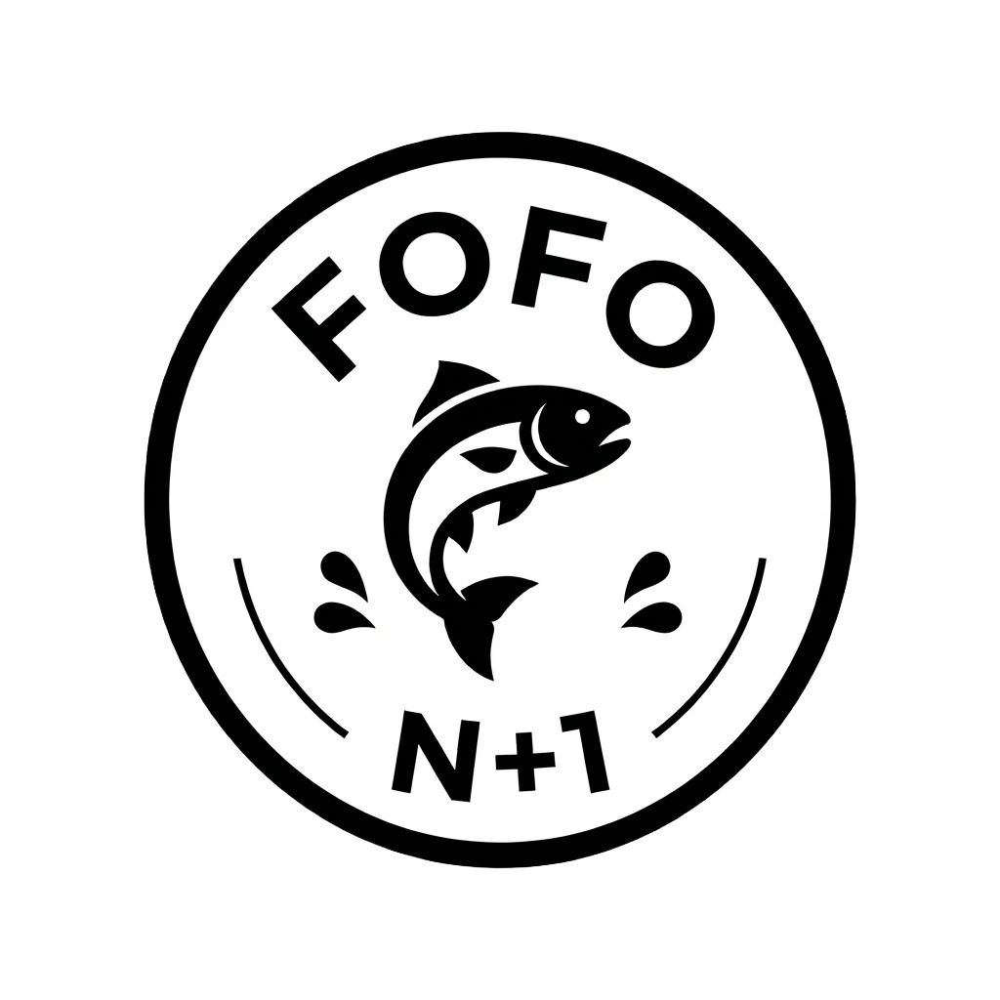

iPhone requires this tap before casting will detect your whip. Tap once, allow the popup, then you're set for the whole session.
Choose your set-up based on the type of saltwater fish you want like in real life. Then cast your lure by whipping your phone while holding the cast button. Casting distance is entirely dependant on how well your setup matches your whip. Once you have casted, you can either let your lure slowly sink to the bottom where you can start jigging by jigging your phone like a rod, or you can slowly reel in to simulate trolling, or you may do both! There is also a current that will affect the trajectory of your lure. Your caught fishes will be in your icebox on the bottom. Good luck!
Hold the bail button, wind up, whip forward, and release to cast — whatever peak force you hit while holding is what counts. After the cast, press it to close the bail and reel. Flick the phone up with the bail closed to jig.
